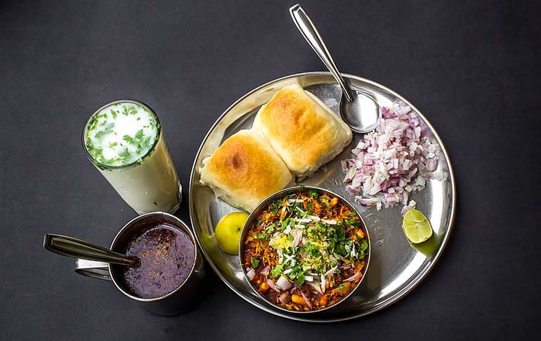
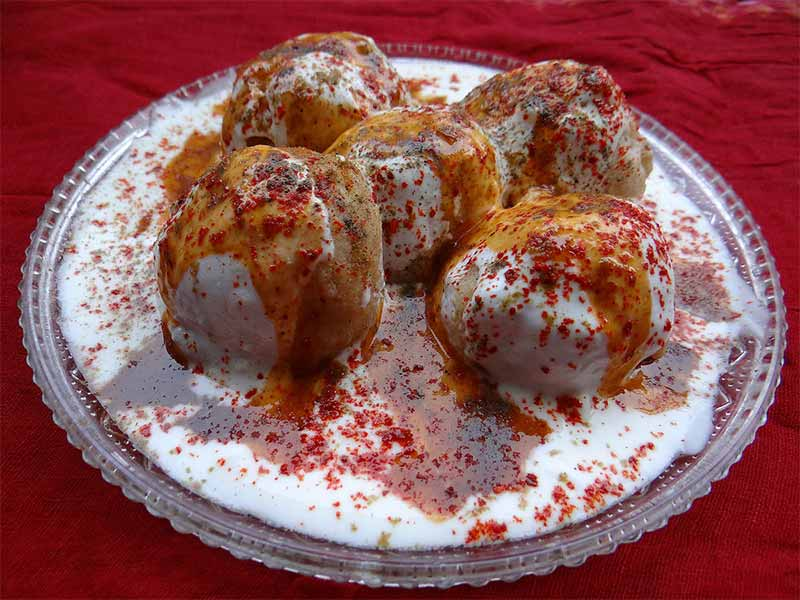
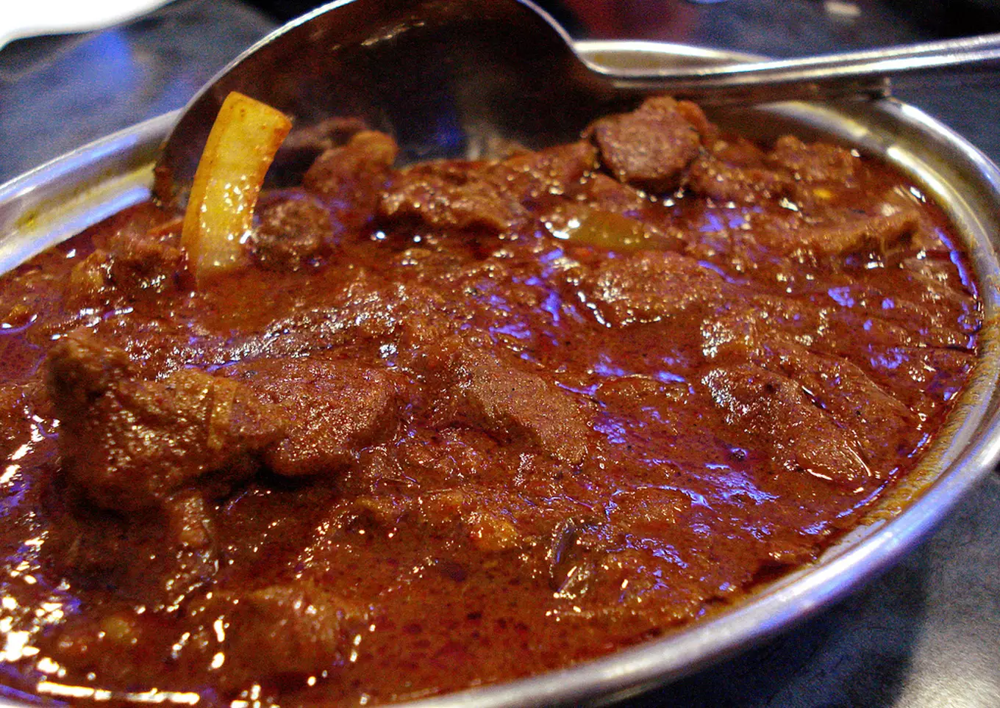

Misal Pav
Ingredients
- Sprouted moth beans (matki)
- Onion
Tomato
Garlic
- shrigajananmasale Turmeric - As per the taste
- shrigajananmasale Seka Cumin Powder - ¼ tea spoon
- shrigajananmasale Red chili powder
- shrigajananmasale Garam masala powder
- shrigajananmasale Lal Mirch Powder - ¼ teaspoon

Method
- Wash and soak the sprouted moth beans for 4-5 hours
- Heat oil in a pan and add cumin seeds and mustard seeds. Let them crackle.Add turmeric powder, red chilli powder, coriander powder, garam masala powder, and salt to taste. Mix well.
- Add the sprouted moth beans and mix well.
Add enough water to cover the sprouts and let it come to a boil
- Reduce the flame and let it simmer for 10-15 minutes till the sprouts are cooked and the curry thickens.
- Garnish with chopped coriander leaves and sev.
Serve hot with pav.

Dahi vada Masala
Ingredients
- Coriander Seeds - 1 cup
- shrigajananmasale Roasted Cumin - 2 teaspoon
- shrigajananmasale Lal Mirch Powder - 1 teaspoon
- shrigajananmasale Golki Powder - ½ teaspoon
- shrigajananmasale Black Salt - ½ teaspoon
Method
- Dry Roast dhania . Let it cool completely then grind it and make a fine powder
- Put the mixture in a bowl then add lal mirch powder,black salt, roasted jeera powder and golki powder
- Store that masala in a airtight glass container and spread it in dahi vada.
Mutton
Ingredients
- Sprouted moth beans (matki)
- Onion
Tomato
Garlic
- 500 gms Mutton Pieces
- 4-5 medium Onion
- 4-5 medium Coconut Pieces
- 1 tbsp Ginger garlic paste by shrigajananmasale
- 1 cup Coriander Leaves
- 2-4 Green Chillies
- 4 tbsp Curd
- 1 tsp Garam Masala by shrigajananmasale
- Salt according to taste

Method
- In a bowl take the mutton pieces and add ginger garlic, curd, and a green paste made by blending coriander leaves and chilies together.
- Let this marinate in the green paste for a minimum of 30 minutes and a maximum overnight if you have the time.
- Take the whole onions and coconut pieces and roast them slightly on the gas stove.
- Keep an eye on the coconut and onions; make sure they are lightly charred but not completely black.
- Grind this into a paste with minimum or no oil.
- In a pressure cooker, add the marinated mutton and let it cook on high flame for the first 6-8 minutes. Continuously keep stirring at this point.
- Once the fat of the mutton is reduced a little, add the black paste and stir some more.
- Add salt according to your preference and a cup of hot water. Let this cook on low heat for 4 whistles.
- Simmer for another 5 minutes, and switch off the flame.
- Once the steam has evaporated naturally, open the cooker and enjoy hot.